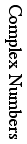
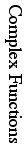
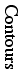
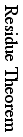

| Area | Date | Section | Topic | Homework |
|---|
| 
| 1/15 | 1.1 | Complex Numbers | 4, 7, 9, 11, 14, 18, 22, 23, 26 |
| 17 | 1.2 | Absolute Value and Conjugates | 4, 6-10, 14, 15 |
| 22 | 1.3 | Polar Form | 2-4, 7, 8, 11-13, 15, 16, 22 |
| 24 | 1.4 | Exponential Function | 1, 3, 5, 7-14 |
| 27 | 1.5 | Powers and Roots | 1, 4, 5, 10, 12, 18 |
| 29 | | Quiz #1 | |
|  | 31 | 2.1 | Complex Functions | 1-3, 5, 7-10 |
| 2/3 | 2.2 | Limits and Continuity | 6, 7, 9-14, 16 |
| 5 | 2.3 | Analytic Functions | 4, 7, 9, 10, 13, 16 |
| 7 | 2.4 | Cauchy-Riemann Equations | 1-3, 6-8, 10-12, 15 |
| 10 | 2.5 | Harmonic Functions | 1, 3-6, 8, 10, 14, 18 |
| 12 | | Review | |
| 14 | | Test #1 | |
|  | 17 | 3.1 | Trigonometric Functions | 5-8, 12, 13, 15, 18, 20, 21 |
| 19 | 3.2 | Logarithm Function | 1-5, 8, 9, 15 |
| 24 | 3.3 | Complex Powers | 1-6, 9, 13 |
| 26 | 4.1 | Contours | 1-3, 5, 7-11 |
| 28 | | Quiz #2 | |

| 3/10 | 4.2 | Contour Integration | 3, 6-8, 10, 11, 14, 15 |
| 12 | 4.3 | Independence of Path | 1, 2, 4, 5, 7, 8, 11 |
| 14 | 4.4a | Cauchy's Integral Theorem | 1, 3, 9, 11, 13-15 |
| 17 | 4.5 | Cauchy's Integral Formula | 1, 2, 3abc, 8a |
| 19 | 4.5 | Integral Formula Consequences | 3def, 4, 6, 7, 10 |
| 21 | 4.6 | More Consequences | 1-3, 5, 6, 8, 13, 14, 21 |
| 24 | | Review | |
| 26 | | Test #2 | |
|
| 28 | 5.2 | Taylor Series | 1ab, 2, 3, 5, 8ab, 9, 11ab, 13--15 |
| 31 | 5.5 | Laurent Series | 1, 3, 4, 6, 9 |
| 4/2 | 5.6 | Singularities and Poles | 1abdh, 3, 5, 6 |
| 4 | 6.1 | Residue Theorem | 1abcd, 2, 3abc, 4 |
| 7 | 6.2 | Trig Integrals | 1--5 |
| 11 | | Quiz #3 | |
| 
|
| 11 | 6.3 | Improper Integrals | 2-6, 11 |
| 14 | 6.4 | Improper Trig Integrals | 1, 3, 5, 7 |
| 16 | 7.3 | Möbius Transformations | 3-8 |
| 21 | 7.6 | Applications | 1, 2, 3, 6 |
| 23 | 7.6 | More Applications | worksheet |
| 25 | | Review | |
| 28 | | Test #3 | |
| | 30 | | Review for Final | |
| 5/2-7 | | Oral Final Exams | |